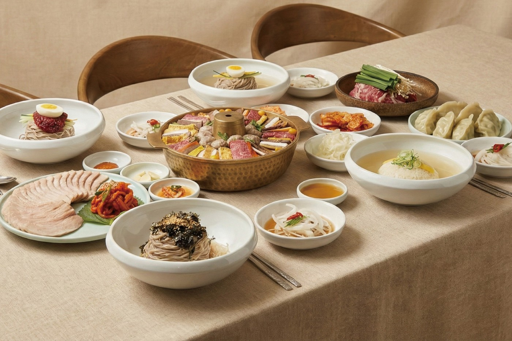

서령 롯데월드몰점
자세한 가게 정보
- 가게명
- 서령 롯데월드몰점
- 위치
- 서울 송파구 올림픽로 300 , 롯데월드몰 6층
- 전화
- 0507-1447-8774
- 영업시간
- 21:00에 라스트오더
- 소개
- 잠실역 지하철 통로를 이용하시면 롯데월드몰 이동이 가능합니다. 잠실역 2호선: 1번 출구와 2번 출구 사이 잠실역 8호선: 10번과 11번 출구 방향 석촌호수, 잠실역, 롯데월드타워, 롯데월드 도보 10분 이내
- 지도 앱
- 지도에서 열기
